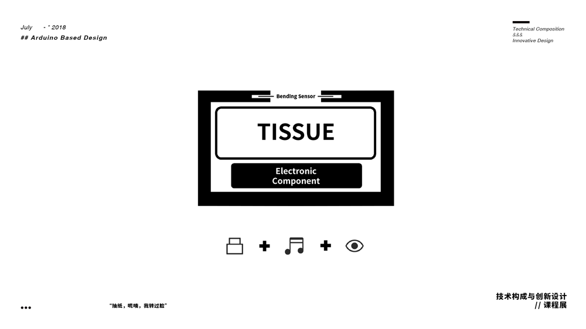
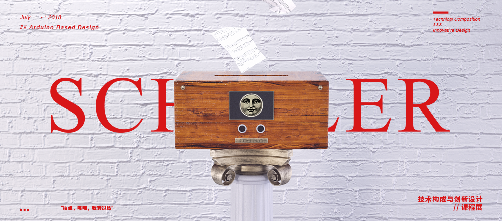

2018 | Schiller
抽纸，呢喃，我转过脸
-
装置设计 ：蔡光锡 / 高天
Device Design : Cai Guangxi / Gao Tian
设计指导 ：何永兴
Design Guide : He Yongxing
-
作品简介
生活可以是无趣的，也可以是有趣的。而决定你的生活是否有趣的东西，其实就是你审视自己生活中一些早已习以为常的小细节的态度。抽纸巾时的摩擦声就是我们选择的小细节——很少有人会注意到，其实抽纸巾时的声音是如此的富于变化，以至于当你仔细去聆听时，抽纸巾就会从行为变成了目的。Schiller音乐纸巾盒是一款与使用者有全新交互的非一次性纸巾盒，我们希望以恶作剧的态度，将“有趣的生活”这一主题做一个最大化的呈现。抽纸，呢喃，我转过脸，这就是我们心中对一个有趣的纸巾盒的设想。
Life can be boring or interesting. What determines whether your life is interesting is actually your attitude of examining small details in your life. The rubbing sound when we wipe the paper towel is the small detail we chose - very few people can notice that the sound of the paper towel is so varied. When you listen to it carefully, wiping the paper towel itself will change from a behavior to a goal. Schiller music tissue box is a non-disposable tissue box that has a new interaction with the user. We hope to maximize the theme of "Fun Life" with a prank attitude. "Papering, whispering, I turned my face", this is the idea of an interesting tissue box in our hearts.
展览时间：2018年7月2日
展览地点：浙江大学国际设计研究院展厅
-
前期构想
- 
Schiller将本已存在的听觉刺激进行了一个强烈的放大，同时加入了一定的视觉刺激。我们将使用者在抽纸时发出的摩擦声进行了转化：用户每抽一张纸时，纸巾盒都会发出不同的带有恶作剧性纸的声音，并且随着用户抽纸巾的方式不同，纸巾盒发出的声音在音色上也会有所不同。
在纸巾盒的正面，我们设置了一张会交互的脸。在用户来到纸巾盒面前准备使用时，原先空白的圆框内会有一张带着恶作剧般微笑的脸徐徐转过，面对着抽纸巾的用户。
-
结构推敲
基本构造上保留了整体的木箱结构。外围板材之间通过胶水连接。而中间则放置一层隔板，用来放置纸巾，并将其与下部的电子原件区域进行一个分隔。隔板通过插销结构与木箱外部结构紧密连接。同时设置了两个斜柱，插在隔板上用于放置弯曲传感器。本次产品结构中使用的木材均为激光切割5mm厚椴木板。
-
Schiller的诞生
-
展览现场
-
Schiller音乐纸巾盒是我们的一个实验性产品。快节奏生活的人们往往会忽视生活中的细节，细节是动人的，因此我们希望赋予这些细节生命力。对于抽纸巾这样一个生活中的小动作，每个人都再熟悉不过了，因此我们希望去探求一些更加趣味性且新颖的交互方式，让使用者捕捉到生活的一个小惊喜。
- 